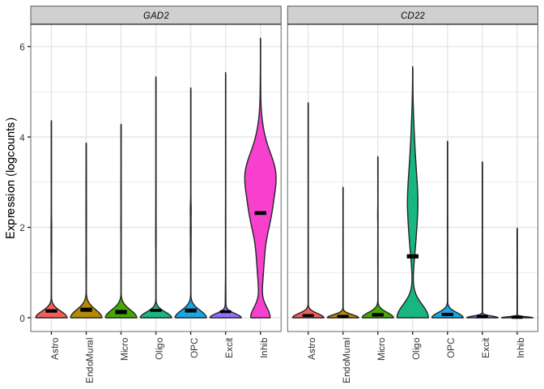

The goal of DeconvoBuddies is to provide helper functions for the deconvolution process, as well as a paired dataset designed to test the performance of deconvolution arguments. The dataset is from Human DLPFC, and contains bulk RNA-seq, single nucleus RNA-seq, and estimated cell type proportions from RNAScope/IF.
Installation instructions
Get the latest stable R release from CRAN. Then install DeconvoBuddies using from Bioconductor the following code:
if (!requireNamespace("BiocManager", quietly = TRUE)) {
install.packages("BiocManager")
}
BiocManager::install("DeconvoBuddies")And the development version from GitHub with:
BiocManager::install("LieberInstitute/DeconvoBuddies")Application of DeconvoBuddies
Access Datasets
DeconvoBuddies contains paired snRNA-seq, bulk RNA-seq, and cell type proportion data from the human DLPFC.
## Access data with fetch_deconvo_data
sce_DLPFC_example <- fetch_deconvo_data("sce_DLPFC_example")
#> 2024-08-07 12:39:29.443059 loading file /Users/louise.huuki/Library/Caches/org.R-project.R/R/BiocFileCache/58f79a421ca_sce_DLPFC_example.Rdata%3Frlkey%3Dv3z4u8ru0d2y12zgdl1az07q9%26st%3D1dcfqc1i%26dl%3D1
## explore the single cell experiment object
sce_DLPFC_example
#> class: SingleCellExperiment
#> dim: 557 10000
#> metadata(3): Samples cell_type_colors cell_type_colors_broad
#> assays(1): logcounts
#> rownames(557): GABRD PRDM16 ... AFF2 MAMLD1
#> rowData names(7): source type ... gene_type binomial_deviance
#> colnames(10000): 8_AGTGACTGTAGTTACC-1 17_GCAGCCAGTGAGTCAG-1 ...
#> 12_GGACGTCTCTGACAGT-1 1_GGTTAACTCTCTCTAA-1
#> colData names(32): Sample Barcode ... cellType_layer layer_annotation
#> reducedDimNames(0):
#> mainExpName: NULL
#> altExpNames(0):Find Marker Genes and Visualize Expression
DeconvBuddies has tools for finding marker genes ideal for deconvolution, and plotting functions to quickly visualize the expression of selected genes in a snRNA-seq data.
#> No summary function supplied, defaulting to `mean_se()`
#> No summary function supplied, defaulting to `mean_se()`
Citation
Below is the citation output from using citation('DeconvoBuddies') in R. Please run this yourself to check for any updates on how to cite DeconvoBuddies.
print(citation("DeconvoBuddies"), bibtex = TRUE)
#> To cite package 'DeconvoBuddies' in publications use:
#>
#> Huuki-Myers LA, Maynard KR, Hicks SC, Zandi P, Kleinman JE, Hyde TM,
#> Goes FS, Collado-Torres L (2024). _DeconvoBuddies: a R/Bioconductor
#> package with deconvolution helper functions_.
#> doi:10.18129/B9.bioc.DeconvoBuddies
#> <https://doi.org/10.18129/B9.bioc.DeconvoBuddies>,
#> https://github.com/LieberInstitute/DeconvoBuddies/DeconvoBuddies - R
#> package version 0.99.0,
#> <http://www.bioconductor.org/packages/DeconvoBuddies>.
#>
#> A BibTeX entry for LaTeX users is
#>
#> @Manual{,
#> title = {DeconvoBuddies: a R/Bioconductor package with deconvolution helper functions},
#> author = {Louise A. Huuki-Myers and Kristen R. Maynard and Stephanie C. Hicks and Peter Zandi and Joel E. Kleinman and Tom M. Hyde and Fernando S. Goes and Leonardo Collado-Torres},
#> year = {2024},
#> url = {http://www.bioconductor.org/packages/DeconvoBuddies},
#> note = {https://github.com/LieberInstitute/DeconvoBuddies/DeconvoBuddies - R package version 0.99.0},
#> doi = {10.18129/B9.bioc.DeconvoBuddies},
#> }
#>
#> Huuki-Myers LA, Montgomery KD, Kwon SH, Cinquemani S, Eagles NJ,
#> Gonzalez-Padilla D, Maden SK, Kleinman JE, Hyde TM, Hicks SC, Maynard
#> KR, Collado-Torres L (2024). "Benchmark of cellular deconvolution
#> methods using a multi-assay reference dataset from postmortem human
#> prefrontal cortex." _bioRxiv_. doi:10.1101/2024.02.09.579665
#> <https://doi.org/10.1101/2024.02.09.579665>,
#> <https://doi.org/10.1101/2024.02.09.579665>.
#>
#> A BibTeX entry for LaTeX users is
#>
#> @Article{,
#> title = {Benchmark of cellular deconvolution methods using a multi-assay reference dataset from postmortem human prefrontal cortex},
#> author = {Louise A. Huuki-Myers and Kelsey D. Montgomery and Sang Ho Kwon and Sophia Cinquemani and Nicholas J. Eagles and Daianna Gonzalez-Padilla and Sean K. Maden and Joel E. Kleinman and Thomas M. Hyde and Stephanie C. Hicks and Kristen R. Maynard and Leonardo Collado-Torres},
#> year = {2024},
#> journal = {bioRxiv},
#> doi = {10.1101/2024.02.09.579665},
#> url = {https://doi.org/10.1101/2024.02.09.579665},
#> }Please note that the DeconvoBuddies was only made possible thanks to many other R and bioinformatics software authors, which are cited either in the vignettes and/or the paper(s) describing this package.
Code of Conduct
Please note that the DeconvoBuddies project is released with a Contributor Code of Conduct. By contributing to this project, you agree to abide by its terms.
Development tools
- Continuous code testing is possible thanks to GitHub actions through usethis, remotes, and rcmdcheck customized to use Bioconductor’s docker containers and BiocCheck.
- Code coverage assessment is possible thanks to codecov and covr.
- The documentation website is automatically updated thanks to pkgdown.
- The code is styled automatically thanks to styler.
- The documentation is formatted thanks to devtools and roxygen2.
For more details, check the dev directory.
This package was developed using biocthis.